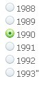

前端组件
在视图层, 出于对性能和易用性的平衡, 没有直接采用smarty, 而是用了自行开发的tramsy模板机制, 语法上基本忠于smarty, smarty的几种类型插件同样支持. 扩展方式采用service机制进行扩展.
我们目前支持的smarty的语法和插件:
概述: 用于在模板被执行时为模板变量赋值.
| 属性 |
类型 |
是否必须 |
描述 |
| var |
string |
yes |
被赋值的变量名 |
| value |
string |
yes |
赋给变量的值 |
assign 演示
<{assign var="age" value=20}>
<{$age}>
输出：
20
<{assign var="arr" value=array("s","b")}>
<{dump var=$arr}>
输出：
array
0 => string 's' (length=1)
1 => string 'b' (length=1)
概述: 用于在模板被执行时循环
| 属性 |
类型 |
是否必须 |
描述 |
| from |
string |
yes |
待循环数组的名称 |
| item |
string |
yes |
当前处理元素的变量名称 |
| key |
string |
on |
当前处理元素的键名 |
| name |
string |
on |
该循环的名称，用于访问该循环 |
foreach 必须和 /foreach 成对使用，且必须指定 from 和 item 属性.name 属性可以任意指定.foreach 可以嵌套，但必须保证嵌套中的 foreach 名称唯一.from 属性(通常是数组)决定循环的次数。foreachelse 语句在 from 变量没有值的时候被执行.
% 输出数组$array中所有元素
<{foreach from=$array item=value key=key}>
<{$key}> : <{$value}><br>
<{/foreach}>
输出：
a : c#
b : php
c : java
% 当输出为空时, 输出foreachelse的值
<{foreach from=$array item=value key=key}>
<{$key}> : <{$value}><br>
<{foreachelse}
empty
<{/foreach}>
输出:
empty
概述: 加载app级模板, 加载网店级模板可以用require
<{include file='site/product/goods_js.html' app=b2c}>
概述: 条件判断
| 修饰符 |
备用词 |
语法用例 |
说明 |
php等同表达式 |
| == |
eq,is |
$a eq $b |
equals |
== |
| != |
ne,neq |
$a neq $b |
not equals |
!= |
| > |
gt |
$a gt $b |
greater than |
> |
| < |
lt |
$a lt $b |
less than |
< |
| >= |
gte,ge |
$a ge $b |
greater than or equal |
>= |
| <= |
lte,le |
$a le $b |
less than or equal |
<= |
| === |
|
$a === 0 |
check for identity |
=== |
| ! |
not |
not $a |
negation(unary) |
! |
| % |
mod |
$a mod $b |
modulous |
% |
| is [not] odd |
|
$a is not odd |
[not] an odd number(unary) |
$a%2!=0 |
| is [not] even |
|
$a is not even |
[not] an even number(unary) |
$a%2=0 |
每一个{if}必须与一个{/if}成对出现，允许使用{else}和{elseif}，所有php条件和函数在这里同样适用，诸如||、or、&&、and、is_array()等等
下面是一串有效的限定符，它们的左右必须用空格分隔开，注意列出的清单中方括号是可选的，在适用情况下使用相应的等号（全等或不全等）。
<{if $name eq "yi"}>
...
<{elseif $name eq "yu"}>
...
<{else}>
...
<{/if}>
{if $name == 'Fred' || $name == 'Wilma'}
...
{/if}
% 允许使用圆括号
{if ( $amount < 0 or $amount > 1000 ) and $volume >= #minVolAmt#}
...
{/if}
% 可以嵌入函数
{if count($var) gt 0}
...
{/if}
% 数组检查
{if is_array($foo) }
.....
{/if}
% 是否空值检查
{if isset($foo) }
.....
{/if}
% 测试值为偶数还是奇数
{if $var is even}
...
{/if}
{if $var is odd}
...
{/if}
{if $var is not odd}
...
{/if}
% 测试var能否被4整除
概述: ldelim 和 rdelim 用于输出分隔符，也就是大括号 "<{" 和 "}>". 模板引擎总是尝试解释大括号内的内容
所属类: base_view_compiler
概述: 在模板中进行运算
| 属性 |
类型 |
是否必须 |
描述 |
| equation |
string |
yes |
计算表达式 |
| assign |
string |
no |
被赋值的变量名 |
| format |
string |
no |
输出格式 |
<{math equation="x*2+y" format="--%03d--" assign="newkey" x=10 y=3}>
<{$newkey}>
输出：
--023--
--023--
<{math equation="x*2+y" assign="newkey" x=10 y=3}>
输出：
23
所属类: site_view_compiler
概述: 加载当前模板目录下模板文件
| 属性 |
类型 |
是否必须 |
描述 |
| file |
string |
yes |
指定模板文件路径 |
<{require file="block/header.html"}>
输出：
加载当前模板目录下block/header.html文件
所属类: base_view_compiler
概述: 显示ecos logo
<{ecos_logo}>
输出：
Powered By ECOS
所属类: site_view_compiler
概述: 模板系统级区域
| 属性 |
类型 |
是否必须 |
描述 |
| view |
string |
no |
指定主区域模板路径 |
<{main}>
输出：
使用系统内置的主区域模板进行渲染, 并输出主区域内容
<{main view="abc.html"}>
输出：
使用{$ecstore_root}/themes/{$template_name}/abc.html 作为主区域模板进行渲染, 并输出主区域内容
所属类: site_view_compiler
概述: 单个widget实例调用
可用： 否
| 属性 |
类型 |
是否必须 |
描述 |
| id |
string |
no |
挂件区域唯一标识, 一旦设定请勿轻易改动 |
| name |
string |
no |
挂件区域唯一标识, 一旦设定请勿轻易改动 |
所属类: site_view_compiler
概述: 模板挂件区域
| 属性 |
类型 |
是否必须 |
描述 |
| id |
string |
no |
挂件区域唯一标识, 一旦设定请勿轻易改动 |
<{widgets id='index-banner'}>
输出：
为模板页面增加了一个挂件区域, 可通过后台模板可是化编辑中挂载挂件
所属类: base_view_compiler
功能: 设置默认值
<{assign var="key" value=''}>
<{$key|default:30}>
输出:
30
所属类: site_view_compiler
概述: 将内部地址转换为, 显示地址
方式: modifier
<{assign var="ship_area" value="mainland:广东/广州市/东山区:425"}>
<{$ship_area|ship_area}>
输出:
广东广州市东山区
所属类: b2c_view_compiler
概述: 将内部地址转换为, 显示地址, 是用复杂,暂仅供内部使用
方式: modifier
所属类: b2c_view_compiler
概述: 通过配货方式表主键id号, 显示配货地址名称
建议: 仅建议在后台使用
方式: modifier
<{2|ship_name}>
输出:
货到付款
所属类: b2c_view_compiler
概述: 用处不明
所属类: ectools_view_compiler
概述: 将货币价格(默认系统里价格为基准货币价格)转换成当前货币价格, 并以当前货币格式输出
别名: cur_odr
% 当前货币和基准货币价格一致, 并且基准价格为人民币
<{40|cur}>
输出:
￥40.00
所属类: ectools_view_compiler
概述: 通过货币表主键id号, 显示货币名称
建议: 仅建议在后台使用
<{1|cur_name}>
输出:
人民币
所属类: ectools_view_compiler
概述: 通过支付方式主键id号, 显示货币名称
建议: 仅建议在后台使用
<{1|pay_name}>
输出:
人民币
所属类: base_view_helper
概述: 用于显示一个计数器
counter 用于输出一个记数过程. counter 保存了每次记数时的当前记数值. 用户可以通过调节 interval 和 direction 调节该值. 也可以决定是否输出该值. 如果需要同时运行多个计数器，必须为它们指定不同的名称. 如果没有指定名称，模板引擎使用 "default" 作为缺省值.如果指定了 "assign" 这个特殊属性，该计数器的输出值将被赋给由 assign 指定的模板变量，而不是直接输出.
| 属性 |
类型 |
是否必须 |
默认值 |
描述 |
| name |
string |
No |
default |
计数器的名称 |
| start |
number |
No |
1 |
数器初始值 |
| skip |
number | No |
1 |
记数器间隔、步长 |
| direction |
string |
No |
up |
记数器方向，(增/减) |
| print |
boolean |
No |
true |
是否输出值 |
| assign |
string |
No |
n/a |
输出值将被赋给模板变量的名称 |
% counter 例子：
0-<{counter name="wocao" start=6 skip=3 direction=down print=false}><br />
1-<{counter name="wocao"}><br />
2-<{counter name="wocao"}><br />
3-<{counter name="wocao" assign="result"}><br />
4-<{counter name="wocao"}><br />
5-<{$result}><br />
-----
<br />
0-<{counter name="kkk" start=6 skip=2 direction=down print=false}><br />
1-<{counter name="kkk"}><br />
2-<{counter name="kkk"}><br />
3-<{counter name="kkk" assign="result"}><br />
4-<{counter name="kkk"}><br />
5-<{$result}><br />
<{counter start=6 skip=3 direction=down print=false}><br />
<{counter}><br />
<{counter}><br />
<{counter assign="www"}><br />
<{$counter}>
输出：
0-
1-3
2-0
3-
4--6
5--3
-----
0-
1-4
2-2
3-
4--2
5-0
所属类: base_view_helper
概述: 生成HTML的<select><option>标签
建议: 详细用法可参考smarty文档
| 属性 |
类型 |
是否必须 |
默认值 |
描述 |
| values |
array |
Yes, 除非使用 options 属性 |
n/a |
下拉框值的数组 |
| output |
array |
Yes, 除非使用 options 属性 |
n/a |
下拉框显示的数组 |
| selected |
string/array |
No |
empty |
选中的项 |
| options |
数组 |
Yes, 除非使用 values 和 output |
n/a |
键值对的数组，用于下拉框 |
| name |
string |
No |
empty |
select组的名称 |
- 必要的属性是values 和 output, 除非你使用组合的options来代替。
- 除非提供了可选属性name， 才会创建 <select></select>标签， 不然，只会生成<option>列表。
- 如果设置的value是数组，会当作HTML的<optgroup>，并且显示该下拉组。 <optgroup>是支持递归的。
- 其他不在上面列表中的键值对参数，会直接在输出的 <select> 标签中显示成 名称=值 的属性。 如果可选参数name没有设置，那么它们将被忽略。
- 全部的输出都符合XHTML的。
<{assign var="options" value=array('a'=>'php','b'=>'c#','c'=>'java')}>
<{html_options name='bb' options=$options }>
输出：
<select name="bb">
<option label="php" value="a">php</option>
<option label="c#" value="b">c#</option>
<option label="java" value="c">java</option>
</select>
所属类: base_view_helper
概述: 可使用数组形式的数据来创建一个HTML的<table>, 此plugin是smarty的html_table简化版
建议: 详细用法可参考smarty文档
| 属性 |
类型 |
是否必须 |
默认值 |
描述 |
| loop |
array |
Yes |
n/a |
循环赋值的数组 |
| cols |
mixed |
No |
3 |
表格的列数，或者是逗号分隔的列头文字列表，或是列头文字的数组。 如果cols属性为空，但设置了rows，将以rows数量和显示元素的总数进行计算得出列数， 以便每列能显示全部的元素。 如果rows和cols都设置了，那么cols会忽略默认值3. 如果设置cols为一个列表或数组，那么列数将取决于列表或数组的元素个数。 |
| table_attr |
string |
No |
border="1" |
<table>标签的属性 |
| tr_attr |
string |
No |
empty |
<tr>标签的属性 (循环) |
| td_attr |
string |
No |
empty |
<td>标签的属性 (循环) |
| trailpad |
string |
No |
|
在最后行空单元格中填充的字符(如果有的话) |
<{assign var="loop" value=array(1,2,3,4,5,6,7,8,9,10)}>
<{html_table loop=$loop cols=3 }>
输出：
<table border="1">
<tr><td>1</td><td>2</td><td>3</td></tr>
<tr><td>4</td><td>5</td><td>6</td></tr>
<tr><td>7</td><td>8</td><td>9</td></tr>
</table>
所属类: base_view_helper
概述: 对变量进行JSON编码
| 属性 |
类型 |
是否必须 |
默认值 |
描述 |
| from |
string |
No |
null |
需要进行JSON编码的变量 |
% $array 要进行JSON编码的变量
<{assign var="array" value=array(1,2,3,4,array(2,4,5))}>
<{json from=$array}>
输出:
[1,2,3,4,[2,4,5]]
所属类: base_view_helper
概述: 可以自动创建一个mailto:链接，而且可以选择编码方式。 对邮件编码可以使邮件地址更难以被网络爬虫抓取
| 属性 |
类型 |
是否必须 |
默认值 |
描述 |
| address |
string |
Yes |
n/a |
电邮地址 |
| text |
string |
No |
n/a |
显示的文字，默认是电邮地址 |
| encode |
string |
No |
none |
如何编码电邮。可以是none,hex,javascript或者javascript_charcode. |
| cc |
string |
No |
n/a |
抄送的电邮地址，用逗号隔开 |
| bcc |
string |
No |
n/a |
暗送的地址，用逗号隔开。 |
| subject |
string |
No |
n/a |
邮件标题 |
| newsgroups |
string |
No |
n/a |
发送到的新闻组地址，用逗号隔开。 |
| followupto |
string |
No |
n/a |
回执地址，用逗号隔开。 |
| extra |
string |
No |
n/a |
任何附加的链接信息，如样式表等 |
<{mailto address="me@domain.com"}><br />
<{mailto address="me@domain.com" text="send me some mail" subject="Hello to you!"
cc="you@domain.com,they@domain.com" extra='class="email"'}><br />
<{mailto address="me@domain.com" encode="javascript"}><br />
<{mailto address="me@domain.com" encode="hex"}><br />
输出：
<a href="mailto:me@domain.com" >me@domain.com</a><br />
<a href="mailto:me@domain.com?cc=you@domain.com%2Cthey@domain.com&subject=Hello%20to%20you%21"
class="email">send me some mail</a><br />
<script type="text/javascript" language="javascript">
eval(unescape('%64%6f%63%75%6d%65%6e%74%2e%77%72%69%74%65%28%27%3c%61%20%68%72%65%66%3d%22%6d%
61%69%6c%74%6f%3a%6d%65%40%64%6f%6d%61%69%6e%2e%63%6f%6d%22%20%3e%6d%65%40%64%6f%6d%61%69%6e%
2e%63%6f%6d%3c%2f%61%3e%27%29%3b'))</script><br />
<a href="mailto:%6d%65@%64%6f%6d%61%69%6e.%63%6f%6d" >
me@domain.com</a><br />
所属类: base_view_helper
概述: 变相的使用app::get($app_id)->getConf($key)取数据
| 属性 |
类型 |
是否必须 |
默认值 |
描述 |
| app |
string |
Yes |
empty |
app_id |
| key |
string |
Yes |
empty |
key |
<{appconf app="site" key="site.name"}>
输出:
商店名称
所属类: base_view_helper
概述: 简单分页组件
| 属性 |
类型 |
是否必须 |
默认值 |
描述 |
| data |
array |
Yes |
|
paper数据 |
data格式:
| 属性 |
类型 |
是否必须 |
默认值 |
描述 |
| current |
int |
Yes |
|
需要进行JSON编码的变量 |
| total |
int |
Yes |
|
需要进行JSON编码的变量 |
| link |
string |
Yes |
|
需要进行JSON编码的变量 |
| token |
string |
Yes |
|
需要进行JSON编码的变量 |
分配变量
$this->pagedata['pagers'] = array(
'current' => 33,
'total' => 3333,
'token' => '_PPP_'
'link'=>'index.php/shopadmin/#app=ecbook&ctl=admin_dbeav&act=index&p=_PPP_',
);
html中调用
<{assign var=data value=array('current=>33,'total
<{pagers data=$pagers}>
所属类: b2c_view_helper
概述: 分页组件
| 属性 |
类型 |
是否必须 |
默认值 |
描述 |
| data |
array |
Yes |
|
paper数据 |
data格式
| 属性 |
类型 |
是否必须 |
默认值 |
描述 |
| data |
array |
Yes |
|
需要进行JSON编码的变量 |
pager current 当前页
total 总页数
link 连接地址
<{assign var="data" value=array('current'=>35,'total'=>3333,'token'=>'@@@','link'=>'http://a/@@@')}>
<{pagers data=$data}>
<{pager current=1 total=30 link='index.php/shopadmin/#app=ecbook&ctl=admin_dbeav&act=index' }>
- pagers
pagers data 参数数组
分配变量
$this->pagedata['pagers'] = array(
'current'=>2,
'total'=>20,
'link'=>'index.php/shopadmin/#app=ecbook&ctl=admin_dbeav&act=index',
);
html中调用
<{pagers data=$pagers}>
参数： from 包含隐藏框的name和value的关联数组
先分配数据：
$this->pagedata['toinput'] = array('a'=>'c#','b'=>'php','c'=>'java');
$this->page('list.html');
list.html：
<{toinput from=$toinput}><br />
输出：
<input type="hidden" name="a" value="c#" />
<input type="hidden" name="b" value="php" />
<input type="hidden" name="c" value="java" />
商店货币显示修饰符
参数 第一个参数：货币币种(货币代码) 默认为人民币
第二个参数：是否为基本数据格式 false|true
第三个参数：是否需要改变费率 false|true
注意 此方法是继承ectools的，所以要调用必须安装ectools。
<{123466789|amount:'CNY'}>
输出效果：￥123,466,789.00
根据image_id对图片显示进行修饰
参数 l 大图
m 中图
s 小图
默认显示原图
<{$image_id|storager:'s'}>
参数: FDATE Y-m-d
SDATE y-m-d
DATE m-d
FDATE_FTIME Y-m-d H:i:s
FDATE_STIME Y-m-d H:i
SDATE_FTIME y-m-d H:i:s
SDATE_STIME y-m-d H:i
DATE_FTIME m-d H:i:s
DATE_STIME m-d H:i
默认：FDATE_FTIME
先分配数据：
$this->pagedata['time'] = time();
$this->page('list.html');
list.html:
<{$time|cdate:FDATE}>
输出：
2011-01-06
参数：第一个参数 输出几个字符 默认是80
第二个参数 后三个代替字符 默认是 ...
先分配数据：
$this->pagedata['string'] = 'abcdefghijklmno';
$this->page('list.html');
list.html:
<{$string|cut:10}><br />
<{$string|cut:10:'+++'}><br />
输出：
abcdefg...
abcdefg+++
参数：参照php中date函数写参数
先分配数据：
$this->pagedata['time'] = time();
$this->page('list.html');
list.html:
<{$time|date:'r'}><br />
输出：
Thu, 06 Jan 2011 17:53:26 +0800
参数： 参数php中strftime函数写参数
先分配数据：
$this->pagedata['time'] = time();
$this->page('list.html');
list.html:
<{$time|date_format:'%Y年'}><br />
输出：
2011年
把‘male’转换为‘男’，把‘female转换为‘女’
<{'male'|gender}> 输出：男
<{'female'|gender}> 输出：女
参数: appid
alt=$___b2c="删除"|t:'b2c'
对$number数据进行格式化
参数 0 把$number强制转换为int型原样输出
1 判断$number是否小于1,如果小于1则输出‘低于1’,否则如果是整数则原样输出，小数则进1位输出
2 判断$number是否小于1,如果小1则输出'超过99'，否则输出100-$number
3 判断$number是否小于1,如果小于1则输出'低于1',否则输出对小数四舍五入的值
<{1234.247|number:3}> //1234.3
参数：第一个参数 填充的次数
第二个参数 填充的字符
先分配数据：
$this->pagedata['p'] = 'abcd';
$this->page('list.html');
list.html:
<{$p|paddingleft:5:'-'}><br />
输出：
-----abcd
参数：第一参数：替换正则表达式.
第二参数：用来替换的文本字符串
先分配数据：
$this->pagedata['articleTitle'] = "Infertility unlikely to\nbe passed on, experts say.";
$this->page('list.html');
list.html:
<{$articleTitle}><br />
<{$articleTitle|regex_replace:"/[\r\t\n]/":" "}>
输出：
Infertility unlikely to
be passed on, experts say.
Infertility unlikely to be passed on, experts say.
对ECOS框架中input的地区组件传的值进行修饰
<{'mainland:上海/上海市/徐汇区:25'|region}> //上海-上海市-徐汇区
参数：第一参数 被替换的字符串
第二参数 用来替换的字符串
先分配数据：
$this->pagedata['region'] = "afsd/fsd:bbcd/czxc:fsd";
$this->page('list.html');
list.html:
<{$region}><br />
<{$region|replace:'/':'-'}><br />
输出：
afsd/fsd:bbcd/czxc:fsd
afsd-fsd:bbcd-czxc:fsd
参数：替换空格的字符
先分配数据：
$this->pagedata['strip'] = "ss fbsd fsd fs ";
$this->page('list.html');
list.html:
<{$strip}><br />
<{$strip|strip:''}><br />
输出：
ss fbsd fsd fs
ssfbsdfsdfs
ECOS系统对表单进行了简单的验证处理:
vtype 验证的js文件在 desktop/statics/js/coms/validate.js中验证
提示文字在desktop/lang/zh-cn/ls/lang.js中定义
表单属性 文字提示
vtype='required' 本项必填
vtype='number' 请录入数值
vtype='required&&email' 请录入正确的Email地址
vtype='digits' 请录入整数
vtype='unsignedint' 请录入正整数
vtype='unsigned' 请输入大于等于0的数值
vtype='positive' 请输入大于0的数值
vtype='alpha' 请输入英文字母
vtype='alphaint' 请输入英文字母或数字
vtype='alphanum' 请输入英文字母,中文及数字
vtype='date' 请录入日期格式yyyy-mm-dd
vtype='url' 请录入正确的网址
vtype='area' 请选择完整的地区 (用在ectools中的地区input组件中)
vtype='greater' 不能小于前一项
vtype='requiredonly' 必须选择一项
<{input type='text' name='test' vtype='required'}>
<{input type='text' id='email' name='email' vtype='required&&email' }>
<{input type="bool" name='name' value="ture" id="bool"}><hr />
输出：
<input value="true" checked="checked" type="radio" name="name" id="bool-t" check="#" />
<label for="bool-t">是</label>
<input value="false" type="radio" name="name" id="bool-f" check="#" />
<label for="bool-f">否</label><input type="hidden" name="_DTYPE_BOOL[]" value="name" />
调出调色板
<{input type='color' id='yc' value='#cccccc' size=7 maxlength=7}>
<{input type="label" value="test"}>
输出：
<span>test</span>
<{input type="date" value="date"}>
<{input value="text"}>
输出：
<input autocomplete="off" class="x-input " value="text" id="dom_el_006b022" type="text" />
性别’男‘，’女‘单选
value='male' //男 value='female' // 女
<{input type='gender' value='female' id='sex' name='gender'}>
显示‘是’，‘否’，单选
value=1 //是 value=0 //否 只有竖排这一种样式
<{input type='intbool' value='1' id='bool' name='intbool'}>
显示'是‘，’否‘，单选。其效果和input_intbool一样，只是value值不样
value='Y' //是 value='N' //否
<{input type='tinybool' value='Y' id='bool' name='tinybool'}>
<{assign var="opt" value=array(1988,1989,1990,1991,1992,1993)}>
<{input type="radio" options=$opt name="radio"}>

<{assign var="opt" value=array(1988,1989,1990,1991,1992,1993)}>
<{input type="select" options=$opt}>
<{input type="textarea" value="test"}>
<{input type="time" name="to_time"}>
后台图片上传
value 是 image_id 可预览图片
<{input type='image' name='uploader_image' width=100 height=100 value=$image_id}>
调用编辑框
<{input type='html' name='html'}>
<{img src="bundle/handle-show.gif" alt=$___b2c="收起子分类"|t:'b2c' title=$___b2c="展开子分类"|t:'b2c' class="handle-show" app='desktop'}>
<{input app=ectools type="region" name='region' vtype='area'}>
获取另一个finder数据
<{input type='object' object='members' name='name' textcol='shipping,member_id' value=$value multiple=true filter=''}>
具体参数作用可以参照：app/desktop/lib/view/input.php